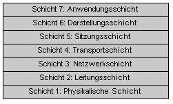
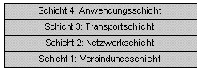

48.1 Grundlagen der Netzwerkprogrammierung
48.1.1 Was ist ein Netzwerk?
Man könnte ganz plakativ sagen, dass ein Netzwerk die Verbindung
zwischen zwei oder mehr Computern ist, um Daten miteinander auszutauschen.
Das ist natürlich eine sehr vereinfachte Darstellung, die am
besten in die Anfangszeit der Entstehung von Computernetzen passt.
Heutzutage gibt es eine Vielzahl von Anwendungen, die auf dem Austausch
von Daten über ein Netzwerk basieren. Zu ihnen zählen beispielsweise:
- Ein Anwender möchte auf eine Datei zugreifen, die ein anderer
Anwender erstellt hat.
- Mehrere Arbeitsplätze sollen auf einen gemeinsamen Drucker
oder ein zentrales Faxgerät zugreifen.
- Beim Booten sollen sich PC-Arbeitsplätze die aktuelle Uhrzeit
von einem Server im Netz holen.
- Das Intranet eines Unternehmens gibt den Angestellten Zugriff
auf oft benötigte Informationen.
- Über einen Internetzugang soll eine elektronische Mail an
einen Bekannten oder Geschäftspartner in einem anderen Teil der
Welt verschickt werden.
- Ein Wissenschaftler möchte ein Experiment auf einem weit
entfernten Hochleistungsrechner laufen lassen.
- Ein Dutzend Rechner sollen zur Leistungssteigerung in einem Cluster
verbunden werden.
- Das lokale Netz eines Unternehmens wird zur Übertragung von
Sprach- und Bilddaten verwendet.
- In einem Chatroom treffen sich Interessierte aus der ganzen Welt,
um zeitgleich über ein gemeinsames Thema zu diskutieren.
So vielfältig wie diese Anwendungen ist auch die dafür erforderliche
Hard- und Softwaretechnik. Das Thema »Computernetze« hat
in den letzten Jahren stark an Dynamik und Umfang zugenommen. Es gibt
heute eigene Studiengänge, deren Schwerpunkt auf der Vernetzung
von Computersystemen liegt. Fast jedes größere Unternehmen
beschäftigt Mitarbeiter, die sich ausschließlich um den
Betrieb und die Erweiterung der unternehmenseigenen Netze und ihrer
Anbindung an öffentliche Netze kümmern.
48.1.2 Protokolle
Um überhaupt Daten zwischen zwei oder mehr Partnern austauschen
zu können, müssen sich die Teilnehmer auf ein gemeinsames
Protokoll geeinigt haben. Als Protokoll
bezeichnet man die Menge aller Regeln, die notwendig sind, um einen
kontrollierten und eindeutigen Verbindungsaufbau, Datenaustausch und
Verbindungsabbau gewährleisten zu können. Es gibt sehr viele
Protokolle mit sehr unterschiedlichen Ansprüchen. Ein weitverbreitetes
Architekturmodell, das ISO/OSI-7-Schichten-Modell,
unterteilt sie in Abhängigkeit von ihrem Abstraktionsgrad in
sieben Schichten (siehe Abbildung 48.1).

Abbildung 48.1: Das ISO/OSI-7-Schichten-Modell
Die derzeit in Java verfügbaren Netzwerkfähigkeiten basieren
alle auf den Internetprotokollen TCP/IP
(bzw. TCP/UDP). Wir wollen uns in diesem
Kapitel ausschließlich mit der TCP/IP-Familie von Protokollen
beschäftigen. Hierfür wird häufig eine etwas vereinfachte
Unterteilung in vier Ebenen vorgenommen (siehe Abbildung 48.2):
- Die unterste Ebene repräsentiert die physikalischen Geräte.
Sie wird durch die Netzwerkhardware und -leitungen und die unmittelbar
darauf laufenden Protokolle wie beispielsweise Ethernet,
FDDI oder ATM
repräsentiert.
- Die zweite Ebene repräsentiert die Netzwerkschicht.
Sie wird in TCP/IP-Netzen durch das IP-Protokoll
und dessen Kontrollprotokolle (z.B. ICMP)
implementiert.
- Die dritte Ebene stellt die Transportschicht
dar. Sie wird durch die Protokolle TCP bzw. UDP repräsentiert.
- Die oberste Ebene steht für die große Klasse der Anwendungsprotokolle.
Hierzu zählen beispielsweise FTP zum Filetransfer, SMTP zum Mail-Versand
und HTTP zur Übertragung von Webseiten.

Abbildung 48.2: Das vereinfachte 4-Ebenen-Modell
Die TCP/IP-Protokollfamilie wird sowohl in lokalen Netzen als auch
im Internet verwendet. Alle Eigenarten des Transportwegs werden auf
der zweiten bzw. dritten Ebene ausgeglichen und die Anwendungsprotokolle
merken prinzipiell keinen Unterschied zwischen lokalen und
globalen Verbindungen. Wurde beispielsweise ein SMTP-Mailer für
den Versand von elektronischer Post in einem auf TCP/IP basierenden
Unternehmensnetz entwickelt, so kann dieser im Prinzip auch dazu verwendet
werden, eine Mail ins Internet zu versenden.
48.1.3 Adressierung von Daten
IP-Adressen
Um Daten über ein Netzwerk zu transportieren, ist eine Adressierung
dieser Daten notwendig. Der Absender muss angeben können, an
wen die Daten zu senden sind, und der Empfänger muss erkennen
können, von wem sie stammen. Die Adressierung in TCP/IP-Netzen
erfolgt auf der IP-Ebene mit Hilfe einer 32-Bit langen IP-Adresse.
Die IP-Adresse besteht aus einer Netzwerk-ID
und einer Host-ID. Die Host-ID gibt
die Bezeichnung des Rechners innerhalb seines eigenen Netzwerks an
und die Netzwerk-ID liefert die Bezeichnung des Netzwerks. Alle innerhalb
eines Verbunds von Netzwerken sichtbaren Adressen müssen eindeutig
sein; es darf also nicht zweimal dieselbe Host-ID innerhalb eines
Netzwerks geben. Sind mehrere Netzwerke miteinander verbunden (wie
es beispielsweise im Internet der Fall ist), müssen auch die
Netzwerk-IDs innerhalb des Verbunds eindeutig sein.
Um diese Eindeutigkeit sicherzustellen, gibt es eine zentrale Institution
zur Vergabe von Internetadressen und -namen, das Network Information
Center (kurz NIC).
Die zu vergebenden Adressen werden in drei Klassen A bis C eingeteilt
(die zusätzlich existierenden Klasse-D- und Klasse-E-Adressen
spielen hier keine Rolle):
| Klasse |
Netzwerk-ID |
Host-ID |
Beschreibung |
| A |
7 Bit |
24 Bit |
Ein Klasse-A-Netz ist für sehr große
Netzbetreiber vorgesehen. Das erste Byte der Adresse liegt im Bereich
von 0 bis 127, sein höchstwertiges Bit ist also immer 0. Ein
Klasse-A-Netz bietet 224 verschiedene Host-IDs innerhalb
des Netzes. Insgesamt gibt es aber nur 128 verschiedene Klasse-A-Netze
weltweit (tatsächlich werden seit einigen Jahren keine Klasse-A-Adressen
mehr vom NIC vergeben). |
| B |
14 Bit |
16 Bit |
Ein Klasse-B-Netz erlaubt immerhin noch
die eindeutige Adressierung von 216 unterschiedlichen Rechnern
innerhalb des Netzwerks. Insgesamt gibt es maximal 16384 verschiedene
Klasse-B-Netze weltweit. Das erste Byte der Adresse liegt im Bereich
von 128 bis 191, seine höchstwertigen Bits haben also immer den
Binärwert 10. |
| C |
21 Bit |
8 Bit |
Klasse-C-Netze sind für kleinere Unternehmen
vorgesehen, die nicht mehr als 256 unterschiedliche Rechner adressieren
müssen. Insgesamt gibt es maximal 2097152 verschiedene Klasse-C-Netze
weltweit. Das erste Byte der Adresse liegt im Bereich von 192 bis
223, seine höchstwertigen Bits haben also immer den Binärwert
110. Die meisten an das Internet angebundenen kleineren Unternehmen
betreiben heute ein Klasse-C-Netz. |
Tabelle 48.1: Klassen von IP-Adressen
Domain-Namen
Während IP-Adressen für Computer sehr leicht zu verarbeiten
sind, gilt das nicht unbedingt für die Menschen, die damit arbeiten
müssen. Wer kennt schon die Telefonnummern und Ortsnetzkennzahlen
von allen Leuten, mit denen er Telefonate zu führen pflegt? Um
die Handhabung der IP-Adressen zu vereinfachen, wurde daher das Domain
Name System eingeführt (kurz DNS),
das numerischen IP-Adressen sprechende Namen wie www.gkrueger.com
oder java.sun.com zuordnet.
Anstelle der IP-Adresse können bei den Anwendungsprotokollen
nun wahlweise die symbolischen Namen verwendet werden. Sie werden
mit Hilfe von Name-Servern in die zugehörige
IP-Adresse übersetzt, bevor die Verbindung aufgebaut wird. Zwar
kann sich hinter ein und derselben IP-Adresse mehr als ein Name-Server-Eintrag
befinden. In umgekehrter Richtung ist die Zuordnung aber eindeutig,
d.h., zu jedem symbolischen Namen kann eindeutig die zugehörige
IP-Adresse (und damit das Netz und der Host) bestimmt werden, zu der
der Name gehört.
48.1.4 Ports und Applikationen
Die Kommunikation zwischen zwei Rechnern läuft oft auf der Basis
einer Client-Server-Beziehung ab. Dabei
kommen den beteiligten Rechnern unterschiedliche Rollen zu:
- Der Server stellt einen Dienst zur Verfügung, der von anderen
Rechnern genutzt werden kann. Er läuft im Hintergrund und wartet
darauf, dass ein anderer Rechner eine Verbindung zu ihm aufbaut. Der
Server definiert das Protokoll, mit dessen Hilfe der Datenaustausch
erfolgt.
- Ein Client ist der Nutzer von Diensten eines oder mehrerer Server.
Er kennt die verfügbaren Server und ihre Adressen und baut bei
Bedarf die Verbindung zu ihnen auf. Der Client hält sich an das
vom Server vorgegebene Protokoll, um die Daten auszutauschen.
Ein typisches Beispiel für eine Client-Server-Verbindung ist
der Seitenabruf im World Wide Web. Der Browser fungiert als Client,
der nach Aufforderung durch den Anwender eine Verbindung zum Webserver
aufbaut und eine Seite anfordert. Diese wird vom Server von seiner
Festplatte geladen oder dynamisch generiert und an den Browser übertragen.
Dieser analysiert die Seite und stellt sie auf dem Bildschirm dar.
Enthält die Seite Image-, Applet- oder Frame-Dateien, werden
sie in gleicher Weise beim Server abgerufen und in die Seite integriert.
Auf einem Host laufen meist unterschiedliche Serveranwendungen, die
noch dazu von mehreren Clients gleichzeitig benutzt werden können.
Um die Server voneinander unterscheiden zu können, gibt es ein
weiteres Adressmerkmal, die Port-Nummer.
Sie wird oberhalb von IP auf der Ebene des Transportprotokolls definiert
(also in TCP bzw. UDP) und gibt die Server-Anwendung an, mit der ein
Client kommunizieren will. Port-Nummern sind positive Ganzzahlen im
Bereich von 0 bis 65535. Port-Nummern im Bereich von 0 bis 1023 sind
für Anwendungen mit Superuser-Rechten reserviert. Jeder Servertyp
hat seine eigene Port-Nummer, viele davon sind zu Quasi-Standards
geworden. So läuft beispielsweise ein SMTP-Server meist auf Port
25, ein FTP-Server auf Port 21 und ein HTTP-Server auf Port 80. Tabelle 48.2
gibt eine Übersicht der auf den meisten UNIX-Systemen verfügbaren
Server und ihrer Port-Nummern.
| Name |
Port |
Transport |
Beschreibung |
| echo |
7 |
tcp/udp |
Gibt jede Zeile zurück, die der Client
sendet |
| discard |
9 |
tcp/udp |
Ignoriert jede Zeile, die der Client sendet |
| daytime |
13 |
tcp/udp |
Liefert ASCII-String mit Datum und Uhrzeit |
| chargen |
19 |
tcp/udp |
Generiert ununterbrochen Zeichen |
| ftp |
21 |
tcp |
Versenden und Empfangen von Dateien |
| telnet |
23 |
tcp |
Interaktive Session mit entferntem Host |
| smtp |
25 |
tcp |
Versenden von E-Mails |
| time |
37 |
tcp/udp |
Liefert die aktuelle Uhrzeit als Anzahl
der Sekunden seit 1.1.1900 |
| whois |
43 |
tcp |
Einfacher Namensservice |
| tftp |
69 |
udp |
Vereinfachte Variante von FTP auf UDP-Basis |
| gopher |
70 |
tcp/udp |
Quasi-Vorgänger von WWW |
| finger |
79 |
tcp |
Liefert Benutzerinformationen |
| www |
80 |
tcp/udp |
Der Webserver |
| pop3 |
110 |
tcp/udp |
Übertragen von Mails |
| nntp |
119 |
tcp |
Übertragen von Usenet-News |
| snmp |
161 |
udp |
Netzwerkmanagement |
| rmi |
1099 |
tcp |
Remote Method Invocation |
Tabelle 48.2: Standard-Port-Nummern
48.1.5 Request for Comments
Die meisten der allgemein zugänglichen Protokolle sind in sogenannten
Request For Comments (kurz RFCs)
beschrieben. RFCs sind Dokumente des Internet Activity Board
(IAB), in denen Entwürfe, Empfehlungen
und Standards zum Internet beschrieben sind. Auch Anmerkungen, Kommentare
oder andere informelle Ergänzungen sind darin zu finden und auch
Humor kommt in den RFCs nicht zu kurz, wie etwa das Hypertext Coffee
Pot Control Protocol (HTCPCP) in RFC 2324 oder das 2004 veröffentlichte
»Allwissenheitsprotokoll«, welches es der US-amerikanischen
Regierung ermöglichen sollte, alle Arten von Computerkriminalität
zu entdecken und mit den Worten »Good Luck« endet.
Insgesamt gibt es derzeit über 5000 RFCs, einige von ihnen wurden
zu Internetstandards erhoben. Alle bekannten Protokolle, wie beispielsweise
FTP, SMTP, NNTP, MIME, DNS, HMTL oder HTTP, sind in einschlägigen
RFCs beschrieben. Sie sind nicht immer einfach zu lesen, aber oftmals
die einzige verlässliche Quelle für die Implementierung
eines bestimmten Protokolls. Es gibt viele Server im Internet, die
RFCs zur Verfügung stellen. Zu den bekanntesten zählt beispielsweise
der RFC Editor unter http://www.rfc-editor.org/.
| Protokoll/Dokument |
Zuständige RFCs |
| IP |
RFC791, RFC1060 |
| ICMP |
RFC792 |
| TCP |
RFC793 |
| UDP |
RFC768 |
| DNS |
RFC1034, RFC1035, RFC2136, RFC974, RFC1101,
RFC1812 |
| ARP / RARP |
RFC826, RFC903 |
| SMTP |
RFC821, RFC822 |
| MIME |
RFC2045 - RFC2049 |
| Content Types |
RFC1049 |
| POP3 |
RFC1939 |
| NNTP |
RFC977 |
| HTML 3.2 |
Internal Draft |
| HTML 2.0 |
RFC1866 |
| HTTP 1.0 / 1.1 |
RFC1945, RFC2068 |
| FTP |
RFC959, RFC765 |
| TFTP |
RFC1782, RFC1783, RFC1350 |
| TELNET |
RFC854 |
| SNMP |
RFC1157 |
| X11 |
RFC1013 |
| NTP |
RFC1305 |
| FINGER |
RFC1288 |
| WHOIS |
RFC954 |
| GOPHER |
RFC1436 |
| ECHO |
RFC862 |
| DISCARD |
RFC863 |
| CHARGEN |
RFC864 |
| DAYTIME |
RFC867 |
| TIME |
RFC868 |
| Assigned Numbers |
RFC1700 |
| Internet Protocol Standards |
RFC2400 |
| Hitchhikers Guide to the Internet |
RFC1118 |
Tabelle 48.3: Liste wichtiger RFCs
48.1.6 Firewalls und Proxys
Nicht alle Server in einem Netzwerk sind für alle Clients sichtbar.
Aufgrund von Sicherheitserwägungen wird insbesondere die Verbindung
zwischen einem lokalen Unternehmensnetz und der Außenwelt (z.B.
dem Internet) besonders geschützt. Dazu wird meist eine Firewall
verwendet, also ein spezielles Gateway mit Filterfunktion, das Netzwerkverkehr
nur in bestimmten Richtungen und in Abhängigkeit von Port-Nummern,
IP-Adressen und anderen Informationen zulässt. Mit einer Firewall
kann beispielsweise dafür gesorgt werden, dass nicht von außen
auf den Mail-Server (Port 25) des Unternehmens zugegriffen werden
kann. Oder es kann verhindert werden, dass die firmeninternen Anwender
bestimmte Webserver im Internet besuchen usw.
Normalerweise ist es insbesondere nicht erlaubt, IP-Daten zwischen
einem beliebigen Arbeitsplatzrechner und einem außerhalb des
Unternehmens liegenden Server hin- und herzusenden. Um dennoch beispielsweise
das Anfordern von Webseiten von beliebigen Servern zu ermöglichen,
kommuniziert der Web-Browser auf dem Arbeitsplatz mit einem Proxy-Server
(kurz Proxy), der innerhalb der Firewall liegt. Anstatt
die Seitenanfrage direkt an den Server zu schicken, wird sie an den
Proxy übergeben, der sie an den Server weiterleitet. Die Antwort
des Servers wird nach Erhalt vom Proxy an den anfordernden Arbeitsplatz
gesendet. Die Firewall muss also lediglich dem Proxy eine HTTP-Verbindung
ins Internet gestatten, nicht allen Arbeitsplätzen.
Ein Proxy ist also eine Art »Handlungsbevollmächtigter«
(so lautet die wörtliche Übersetzung), der Aufgaben erledigt,
die dem einzelnen Arbeitsplatz nicht erlaubt sind. Proxys gibt es
auch für andere Zwecke, etwa zum Zugriff auf Datenbanken. Da
beispielsweise ein Applet aus Sicherheitsgründen nur zu dem Server
eine TCP/IP-Verbindung aufbauen darf, von dem es geladen wurde, kann
es auf Daten aus einer Datenbank nur zugreifen, wenn die Datenbank
auf demselben Host liegt wie der Webserver. Ist dies nicht der Fall,
kann man sich mit einem Datenbankproxy auf dem Web-Host behelfen,
der alle entsprechenden Anfragen an die Datenbank weiterleitet.